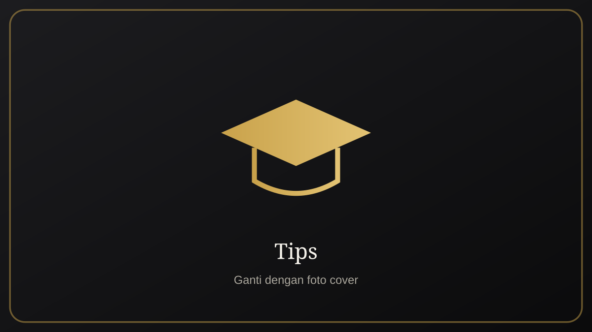

Tips Merawat Buket dan Boneka Wisuda agar Awet
Oleh Tim NAMA_BRAND · Terbit · Diperbarui · 4 menit baca

Penyimpanan yang tepat
Simpan di tempat kering dan sejuk, jauh dari sinar matahari langsung agar warna tidak pudar. Gunakan kotak atau plastik bersih saat tidak dipajang.
Cara membersihkan
- Bersihkan debu dengan kuas lembut atau kain kering
- Noda ringan dibersihkan perlahan dengan kain lembap
- Hindari merendam bagian bordir atau hiasan
- Keringkan di udara, hindari panas tinggi
Hal yang perlu dihindari
Jangan menarik hiasan, jangan menyimpan di tempat lembap, dan jauhkan dari hewan peliharaan yang suka menggigit.
Menjaga kenangan lebih lama
Pajang di lemari kaca atau rak tertutup agar terlindung dari debu. Foto bersama kenangan itu juga menjadi pelengkap yang berharga.
Rekomendasi paket
Paket Buket Wisuda
Buket boneka dan bunga wisuda yang awet dan bisa disimpan.
Lihat PaketTanya via WhatsAppFAQ
Apakah boneka wisuda boleh dicuci?
Sebaiknya dibersihkan lembut tanpa direndam. Ikuti petunjuk perawatan dari kami.
Bagaimana agar warna tidak pudar?
Hindari sinar matahari langsung dan simpan di tempat kering.
Tentang penulis
Tim NAMA_BRAND adalah pembuat souvenir wisuda custom yang melayani pesanan perorangan, sekolah, dan kampus. Kenali kami.